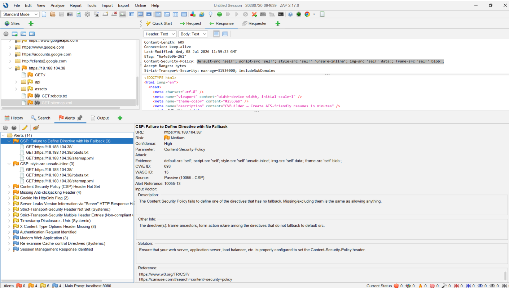
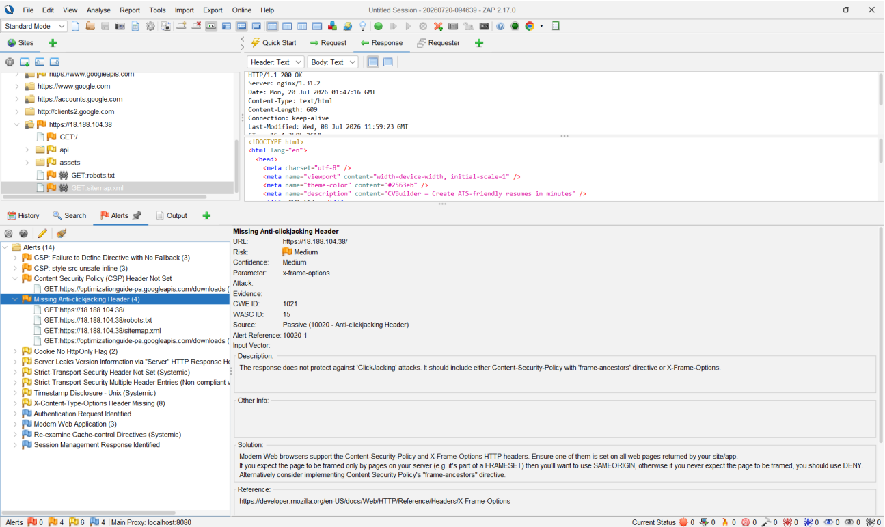
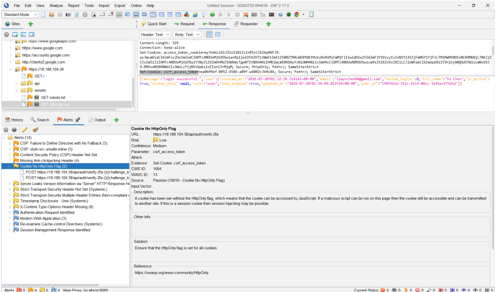
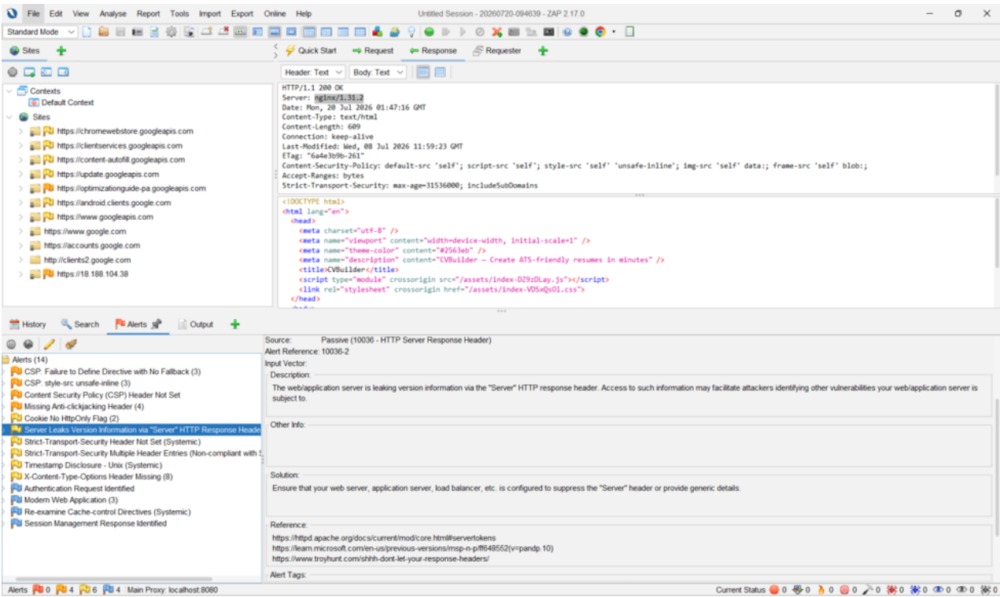

Dynamic Security Testing of a Peer Web App
- Role
- QA tester, OWASP ZAP (automated and authenticated scanning)
- Team
- QA pair, with a teammate testing manually in Burp Suite
- Target
- Another team's live résumé-builder web app (React frontend, Flask backend, Nginx, two-factor login)
- Tools
- OWASP ZAP 2.17
The context
Earlier in the module, my team built our own app, Safesplit. In the final phase, each team then acted as the independent QA team for another team's application. Our QA work had three parts: a manual source code review, static analysis, and dynamic testing of the live deployed app. Dynamic testing had a specific job: to check whether the issues found by reading the code actually showed up in the running system, and to find anything the code review could not see.
- Source code review
- Static analysis
- Dynamic testing (live app) OWASP ZAP automated + authenticated scanning (my part) Burp Suite manual testing (teammate)
My part: scanning behind two-factor login
I first ran an unauthenticated scan to get a baseline. Most of the application, though, sits behind a login that requires a password and then a time-based one-time code. ZAP cannot complete that second step on its own, so an automated scan would only ever see the login page.
To reach the authenticated parts of the app, I completed the login by hand, captured the session cookie that the server set after the two-factor step, and configured ZAP's Replacer to inject that cookie into every request it sent. With that in place, the spider and active scanner could crawl the dashboard, profile and API routes as a logged-in user.
What I found
I confirmed six issues, all in security headers and configuration:
| ID | Finding | Severity | Why it matters |
|---|---|---|---|
| D8 | Content Security Policy incomplete and inconsistent | Medium | No frame-ancestors or form-action directives, inline styles allowed, and no policy at all on API responses |
| D9 | Missing anti-clickjacking header | Medium | Nothing stops another site from loading the app inside a hidden frame |
| D10 | CSRF cookie readable by JavaScript | Low | Likely intentional (double-submit CSRF pattern); flagged for the team to confirm |
| D11 | Duplicate HSTS headers | Low | Browsers only honour the first, so the policy may be applied inconsistently |
| D12 | Missing X-Content-Type-Options | Low | Browsers may guess content types, including on error pages |
| D13 | Server version disclosed | Low | The exact Nginx version gives attackers a starting point for known vulnerabilities |


Filtering out noise
Scanner output is not a list of findings until it has been checked. Two examples from this test:
- ZAP raised a "Strict-Transport-Security Header Not Set" alert, but every instance resolved to background browser traffic to Google services, not the target application. I excluded it rather than reporting a false positive.
- ZAP rated the CSRF cookie without HttpOnly as an issue. Looking at how the app's two cookies were set, the session cookie was correctly hardened and the CSRF cookie matched a standard pattern where JavaScript is meant to read it. I reported it as Low, with a note asking the developers to confirm the design rather than treating it as a vulnerability.


The team result
Together with my teammate's manual Burp Suite testing, the QA pair confirmed 9 issues, ruled out 3 that the code review had predicted, and recorded 1 critical issue as blocked rather than passed, because testing it needed an admin account we did not have. The most serious confirmed issue, found through manual testing, was that rapid failed logins crashed the backend.
What I learned
- Automated scanners need set-up to be useful. Without the authenticated session, most of the app would have gone untested and the report would have looked cleaner than the app really was.
- Every alert needs triage. Excluding the off-target HSTS alert and downgrading the CSRF cookie both required reading the evidence, not just the alert title.
- Header issues are cheap to fix and easy to miss. Most of my findings could be fixed with a few lines of web server configuration, which is exactly why they are worth catching before release.
- Automated and manual testing find different things. ZAP covered configuration across the whole app; my teammate's manual testing found the logic and availability issues.